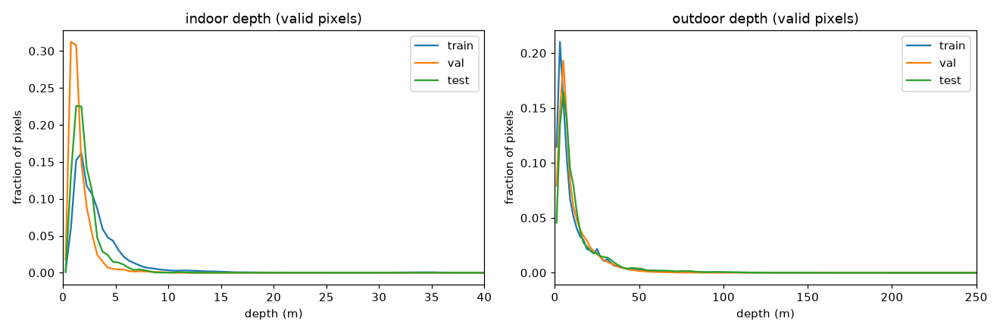
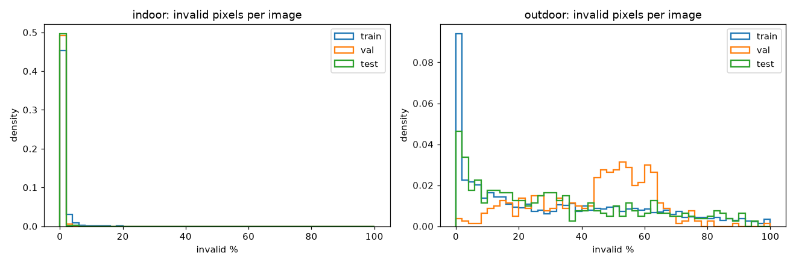
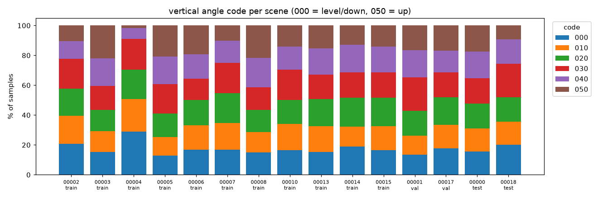
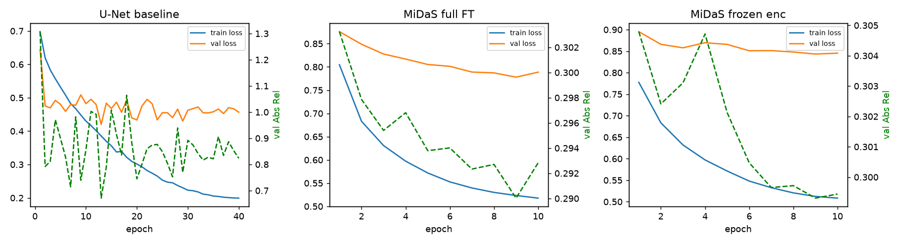
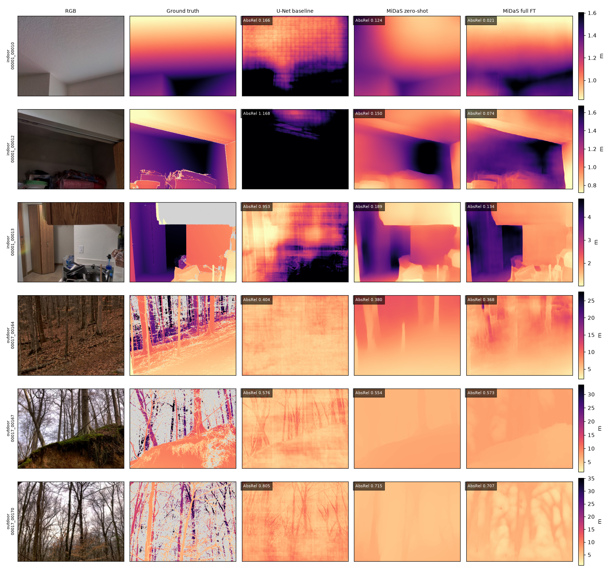
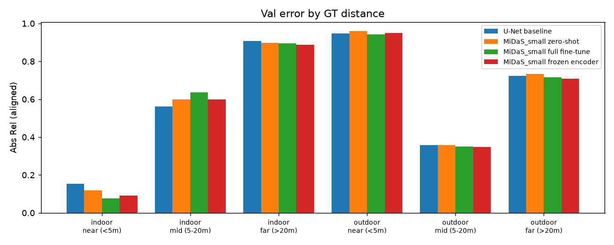

Attribution note. Every log entry in
AI_USAGE.md
records Đỗ Đăng Khoa as the member who carried out the M1 work, including the
preprocessing, visualization and formatting listed above. This table is kept consistent
with that record rather than describing an intended split: each member is credited only
with work they performed, so the M1 workload is reported as uneven.
Evaluation tools, baseline U-Net, MiDaS zero-shot / full FT / frozen encoder, first error analysis
Draft results in (1 seed per config)
M3 Final (60%)
11 Nov 2026
3-seed controlled experiment, full error analysis, report, slides, video
In progress
1. Problem Statement
Task Goal: Monocular Depth Estimation — predict physical distance (in metres) from camera per pixel from a single 2D RGB photo.
Key Challenge: Scale ambiguity in 2D photos (a small nearby object vs. a giant distant object can take up identical pixel sizes). Model must learn visual perspective, texture gradients, and boundary cues.
Data Scope: Evaluated on both Indoor (1–9m close-range) and Outdoor (up to 100–200m long-range) scenes. Ground truth is measured by LiDAR laser scanners. Missing laser reflections (sky, glass, sharp edges) use a validity mask (1 = valid depth, 0 = ignore).
Compute loss and evaluation metrics strictly on valid pixels (mask = 1)
2. Dataset Description & Preliminary EDA
2.1 Dataset Overview & Processing Workflow
Source Dataset: DIODE — Dense Indoor and Outdoor DEpth (Vasiljevic et al., 2019),
diode-dataset.org. Obtained through a Kaggle
mirror of the official release. The upstream release totals 26,229 RGB images
(train 8,574 indoor + 16,884 outdoor; val 325 indoor + 446 outdoor), which matches the mirror
we downloaded.
Version: the original 2019 DIODE release, obtained from the Kaggle mirror
artemmmtry/diode-a-dense-indoor-and-outdoor-depth-dataset,
Kaggle Version 8 (199.89 GB, last updated two years ago). Not DIODEv2: the
mirror holds 26,229 images, exactly the 25,458 training plus 771 validation images of the
2019 release, and its data sources contain only train/ and val/.
License:MIT, and consistent at both levels, which was
checked rather than assumed: the upstream release states MIT on diode-dataset.org and in the
official devkit repository diode-dataset/diode-devkit, and the Kaggle mirror we
downloaded declares MIT in its own License field. The mirror therefore imposes no terms
beyond the upstream licence, and redistribution of a derived subset is permitted provided
the citation below is kept.
Citation: I. Vasiljevic, N. Kolkin, S. Zhang, R. Luo, H. Wang, F. Z. Dai,
A. F. Daniele, M. Mostajabi, S. Basart, M. R. Walter and G. Shakhnarovich.
DIODE: A Dense Indoor and Outdoor DEpth Dataset. CoRR abs/1908.00463, 2019.
Sample Volume:7,195 RGB–Depth pairs (4,995 train, 1,100 val, 1,100 test across 15 scenes).
Sample Modality: Each sample consists of an RGB image, a high-precision laser depth map in metres, and a binary validity mask indicating measured laser reflections.
Processing Rule: Raw data is loaded dynamically during training via PyTorch DataLoaders; raw data files are kept local and excluded from repository version control.
2.2 Data Splitting Strategy (Scene-Level Split)
Leakage Prevention: Split strictly by Scene (room / location), not by individual image. Photos from the same room cannot appear in both train and test.
Split Ratio: ~70% Train / 15% Val / 15% Test (seed 42). Verified 0% scene overlap across splits (see scenes_used.csv).
Sampling Rule: Max 700 images per indoor scene, max 400 per outdoor scene (seed 42). Cap spreads the subset across 15 scenes instead of exhausting one large scene.
Note: All three splits come from the official DIODE training partition (no public test set is available), so our numbers are not directly comparable to published DIODE benchmarks.
Figure 1. Visual inspection of 5 random train samples. Left: RGB photo. Middle: Depth map (blue = close, red = far, black = invalid; color scale capped at 99th percentile). Right: Validity mask (white = valid).
Visual Alignment: Nearby ceiling lamps and pipes display in cool blue; far background walls shift to dark red. Outdoor paths gradually transition from blue to red (~40–50m).
Edge Noise (Edge Bleeding): Indoor invalid pixels appear mainly as thin boundary outlines around sharp object contours where laser reflection drops.
Outdoor Sky Region: Sky, fine branches, and objects beyond sensor range are masked as invalid (e.g. crane photo is mostly sky, leaving 6.9% valid pixels).
2.4 Distribution Analysis & Noise Handling
Split
Domain
Samples
p5
Median
p95
p99
Mean Invalid %
train
indoor
2,606
1.0m
2.6m
9.0m
20.1m
0.7%
train
outdoor
2,389
1.4m
6.5m
37.9m
75.4m
30.3%
val
indoor
700
0.6m
1.3m
3.5m
6.4m
0.2%
val
outdoor
400
2.1m
7.7m
33.1m
51.6m
44.4%
test
indoor
700
0.8m
1.8m
5.0m
7.5m
0.2%
test
outdoor
400
2.5m
8.5m
46.1m
84.0m
31.8%

Figure 2. Distribution of valid pixel depth values (in metres) across train, val, and test splits.

Figure 3. Distribution of invalid pixel percentage per image across splits.

Figure 4. Distribution of camera vertical tilt codes (000 to 050) per scene.
Outlier Threshold Cap: Pixels with depth > 50m (indoor) or > 200m (outdoor) are masked out (set mask = 0). Removes < 0.01% of pixels — only extreme sensor noise.
Lower Cap (added in M2): Pixels with depth < 0.6m are also masked out. This is the minimum range of the DIODE laser scanner, so these readings are noise (~0.3% of outdoor pixels, mostly on leaves and glass). Found while checking MiDaS zero-shot: a few of these pixels pushed outdoor Abs Rel above 1.
Camera Tilt Finding: DIODE only has vertical tilt codes 000 to 050 (level to upward view, no downward-facing angles). This is a property of the original dataset, not our filtering.
3. Methodology
3.1 Preprocessing Pipeline
Image Resizing: 1024×768 → 384×288 (RGB resized with bilinear; depth & mask with nearest-neighbour to avoid mixing in invalid zero values).
RGB Normalization: Scaled to [0, 1] + standard ImageNet mean/std normalization.
Depth Target: Kept in true physical metres; invalid pixels and depth outside 0.6–50m (indoor) / 0.6–200m (outdoor) are masked out in both loss and metrics.
Augmentation: Synchronous Random Horizontal Flip (p = 0.5) applied simultaneously to RGB, depth, and mask.
3.2 Baseline & Pretrained Models
Baseline Model: Small U-Net (4 levels, 32→512 channels, 7.76M params) trained from scratch. Predicts log-depth, output = exp(·) in metres. Loss: masked SILog (Eigen et al., 2014, λ = 0.5).
MiDaS Fine-tune Loss: masked scale-and-shift-invariant (SSI) loss from the MiDaS paper (Ranftl et al., 2020): prediction and 1/GT are each normalised per image (median, mean abs deviation), then L1. Fits the relative output, unlike the L1 placeholder used in the M1 speed benchmark.
Alignment for Evaluation: per image, least-squares scale s and shift t so that s·pred + t ≈ 1/GT on valid pixels, then depth = 1 / (s·pred + t), clipped to the domain cap. The U-Net is reported raw (metres) and with the same alignment for a fair comparison.
RMSE: sqrt(mean((d − d*)2)) in metres → lower is better (↓).
δ1: % of valid pixels with max(d/d*, d*/d) < 1.25 → higher is better (↑).
Computed per image on valid pixels only, then averaged over images; reported for indoor, outdoor and overall. Predictions are clipped into the valid range instead of being dropped, so bad pixels still count.
Sanity check: feeding GT as the prediction gives Abs Rel = RMSE = 0 and δ1 = 100%; feeding 1/GT scaled and shifted through the alignment recovers GT (tests/test_metrics.py).
4. Experimental Setup
4.1 Controlled Experiment Specification
Item
Experiment: full fine-tune vs. frozen encoder (MiDaS_small)
Hypothesis
Updating the encoder lets MiDaS adapt its features to DIODE (laser GT, outdoor scenes), so full fine-tuning gets lower val Abs Rel than freezing the encoder.
Changed factor
Only freeze_encoder: false (all 21.3M params train) vs. true (encoder weights and BatchNorm stats fixed, decoder trains).
Fixed factors
Same subset and scene split, preprocessing, SSI loss, AdamW (lr 5e-5, wd 1e-4), cosine schedule, batch 8, 10 epochs, AMP, seed 42, same checkpoint rule and alignment (configs/midas_full.yaml vs configs/midas_frozen.yaml).
Metric
Val Abs Rel (overall, plus indoor / outdoor), with RMSE and δ1 as secondary; also train time and peak VRAM.
Decision criterion
Full FT is better only if its overall val Abs Rel is lower than frozen by more than the seed-to-seed spread (std over 3 seeds). Otherwise the cheaper frozen setup is preferred.
Draft vs. Final: this Draft runs 1 seed (42) per config. The Final will run 3 seeds (42, 43, 44) and report mean ± std, to check whether the gap is larger than seed noise.
Checkpoint rule (all trained models): keep the epoch with the lowest overall val Abs Rel.
Baseline budget: U-Net trains until a 60-minute budget (max 40 epochs).
Reproducibility: one shared config (configs/base.yaml), seeds for python/numpy/torch/workers, cuDNN deterministic. Running the same smoke config twice gave identical numbers.
M1 benchmark (MiDaS_small, batch 8, AMP): ~1.0 min / epoch, 2.0 GB VRAM, L1 placeholder loss, no validation.
M2 actual: ~3.6 min / epoch for full FT. Slower than the benchmark because of deterministic cuDNN, the per-image SSI loss and a full aligned validation pass every epoch. Real cost is in Section 5.2.
5. Results (M2 Draft, val split, seed 42)
5.1 Main Results
Model
Overall
Indoor
Outdoor
AbsRel↓
RMSE↓
δ1↑
AbsRel↓
RMSE↓
δ1↑
AbsRel↓
RMSE↓
δ1↑
U-Net baseline (metric, no alignment)
0.671
4.77
31.9%
0.606
1.06
38.1%
0.785
11.26
21.2%
U-Net baseline (aligned)
0.338
4.43
58.0%
0.165
0.56
77.4%
0.641
11.21
24.0%
MiDaS_small zero-shot (aligned)
0.321
4.60
63.2%
0.132
0.49
83.9%
0.651
11.79
26.9%
MiDaS_small full fine-tune (aligned)
0.290
4.39
68.1%
0.091
0.45
92.4%
0.637
11.26
25.6%
MiDaS_small frozen encoder (aligned)
0.299
4.34
66.3%
0.106
0.47
89.6%
0.637
11.11
25.5%
Alignment: "aligned" rows get a per-image least-squares scale and shift in inverse-depth space against 1/GT on valid pixels before scoring (MiDaS only predicts relative depth). The U-Net is shown both ways so it can be compared fairly with MiDaS. Val = 700 indoor (scene 00001) + 400 outdoor (scene 00017) images. 1 seed per config.
5.2 Compute Cost
Model
Params (M)
Trainable (M)
Epochs
Train time (min)
s / epoch
Peak train VRAM (GB)
Inference (ms/img, bs 1)
U-Net baseline
7.76
7.76
40 (best: 13)
52.0
78
1.40
3.3
MiDaS_small zero-shot
21.32
0
–
–
–
–
9.4
MiDaS_small full fine-tune
21.32
21.32
10 (best: 9)
35.6
214
2.42
10.4
MiDaS_small frozen encoder
21.32
14.90
10 (best: 9)
30.1
180
1.17
11.3
GPU: RTX 4060 Laptop (8 GB) | Python 3.14.8 | PyTorch 2.14.0+cu130 | CUDA 13.0 | cuDNN 9.24 | timm 1.0.30. Whole val set (1,100 images) evaluates in ~13 s including alignment.
5.3 Training Curves

Figure 5. Train / val loss (left axis) and val Abs Rel (green, right axis). Checkpoint = epoch with lowest val Abs Rel.
5.4 Qualitative Results

Figure 6. 3 indoor + 3 outdoor val images. Each row uses one colour scale (2nd–98th percentile of its GT); gray = invalid GT. MiDaS columns are aligned, U-Net is raw metres.
6. Comparison and Discussion
Full fine-tune is best overall (AbsRel 0.290) and clearly on indoor: 0.132 → 0.091 vs. zero-shot, δ1 84% → 92%. This matches the expectation that it beats both zero-shot and the scratch baseline.
Frozen encoder is close (0.299 overall, 0.106 indoor) with half the VRAM (1.17 vs 2.42 GB) and ~15% shorter training. The overall gap (0.009) comes from indoor only; outdoor is the same. With 1 seed we cannot say if this gap is bigger than seed noise → 3 seeds in the Final.
U-Net baseline: raw AbsRel 0.671 is mostly a scale error. The val indoor room is much closer than the train rooms (median 1.3 m vs 2.6 m) and the model predicts train-like distances (Figure 6, row 2). With alignment it drops to 0.338 (indoor 0.165), still worse than MiDaS zero-shot. Val Abs Rel is very noisy across epochs and the best epoch is 13 of 40, while train loss keeps going down → overfitting to the 11 train scenes.
Outdoor does not improve for any model (~0.64). Fine-tuning helps indoor but not the single outdoor val scene (see Section 7).
7. Error Analysis (preliminary)
Domain / GT distance
% of valid pixels
U-Net
MiDaS zero-shot
MiDaS full FT
MiDaS frozen
Indoor, near (<5 m)
97.8%
0.154
0.119
0.077
0.092
Indoor, mid (5–20 m)
2.2%
0.563
0.598
0.636
0.600
Outdoor, near (<5 m)
30.2%
0.947
0.958
0.942
0.949
Outdoor, mid (5–20 m)
54.7%
0.357
0.357
0.349
0.347
Outdoor, far (>20 m)
15.1%
0.723
0.732
0.716
0.708
Abs Rel (aligned, pixel-pooled per bin). Full table with RMSE / δ1: results/tables.md.

Figure 7. Val Abs Rel by GT distance bin.
Indoor: fine-tuning gains come from near pixels (98% of indoor pixels). The few mid-range pixels (doorways, hallways >5 m) stay bad (~0.6) for every model and get slightly worse after fine-tuning.
Outdoor range compression: after alignment, near ground is predicted too far (AbsRel ~0.95) and far trees too close (δ1 < 1%). The predictions barely correlate with 1/GT on this scene, so the best scale/shift squeezes everything toward the middle.
Is it a pipeline bug? (checked, scripts/report/outdoor_check.py): MiDaS zero-shot on 25 images per outdoor scene gives Abs Rel 0.36–0.55 on the 6 train scenes and 0.55 on the test scene, but 0.68 on val scene 00017 (rank correlation with 1/GT 0.14 vs ~0.45 elsewhere). The same code gives 0.09–0.13 indoor, so outdoor is hard in general and the val scene is the hardest one. Dropping pixels next to invalid ones lowers val outdoor Abs Rel from 0.68 to 0.50, so thin branches and noisy GT edges are a big part of it. A log-space alignment was worse (0.89), so the alignment choice is not the cause.
Thin structures: val outdoor is one forest (scene 00017). GT is made of thin branches at very different depths with sky in between (Figure 6, rows 4–6); all models output smooth maps and miss them. Part of this is GT noise on leaves and edges.
U-Net artifacts: grid / checkerboard pattern from the transposed-conv upsampling, and blurry object borders.
Next (Final): also report the test split (other outdoor scene), split errors by object edges vs. flat regions, and try robust (median-based) alignment to see how much of the outdoor error is the alignment itself.
8. Limitations and Conclusion
8.1 Dataset & Pipeline Limitations
Val and test each have only 1 indoor scene and 1 outdoor scene (val outdoor = scene 00017, a forest), so val numbers depend heavily on those two scenes.
Outdoor val has higher sky/invalid pixel rate (~44% vs ~30% in train).
Laser ground truth has noise at sharp object edges, leaves and glass (edge bleeding).
DIODE only has upward/level camera angles (000–050); this is a property of the original dataset, not of our subset.
Images are resized from 1024×768 to 384×288, which smooths fine details like wires and thin branches.
All three splits come from the DIODE training set (no public test set available), so results are not directly comparable to published DIODE benchmarks.
Draft results use 1 seed per config; differences of ~0.01 Abs Rel are not yet meaningful.
8.2 M2 Draft Conclusion
Evaluation tools are tested (metrics, alignment, reproducible seeding). Fine-tuning MiDaS_small beats both zero-shot MiDaS and the scratch U-Net, mostly on indoor scenes; freezing the encoder costs ~0.015 indoor Abs Rel but halves VRAM. Outdoor val (one forest scene) is the main failure case for all models.
In progress for M3: 3 seeds per config, test-split numbers, deeper error analysis.